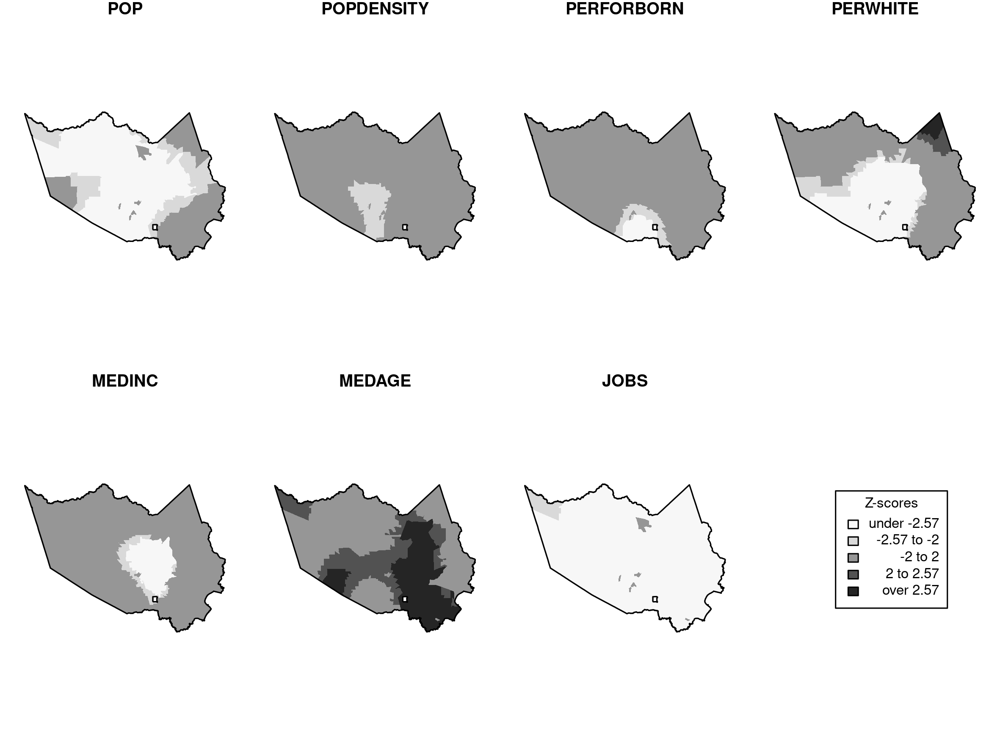

Dissertation Defense
Matthew Haffner
Department of Geography
Oklahoma State University
Overview
- Introduction
- Article 1: Location-based social media behaviors and perceptions: Views of University Students
- Article 2: A spatial analysis of non-English Twitter activity in Houston, Texas
- Article 3: A placed-based analysis of #BlackLivesMatter and color-blind racism on Twitter
- Conclusion
Introduction
- Big data
- Volunteered geographic information (VGI) and geographic information science (GIScience)
- Location-based social media (LBSM)
- Data quality
- Accuracy
- Validity
Location-based social media behavior and perceptions: Views of university students
Article 1
- Demographics, usage patterns, and perceptions
- Questions
- Are there differences in terms of gender, race, and academic standing?
- Why do people contribute?
- What are the implications?
Findings
- Females and underclassmen are the most likely contributors
- Few racial differences exist
- Females are less concerned about privacy
Findings
- Place is an important topic in social media posts
- "Locational journaling"
- Students do not geotag posts from home
A Spatial Analysis of Non-English Twitter Activity in Houston, Texas
Article 2
- Focus: Spatial patterns of non-English users rather than tweets
- Approach: "Abductive" reasoning (Miller and Goodchild 2015)
- Questions:
- Can conventional variables explain the production of Twitter activity by non-English users?
- How does LBSM inform us about place and users' behaviors?
GWR Results

Dependent Variable Non-stationarity

Outliers

A Place-based Analysis of #BlackLivesMatter and Color-blind Racism on Twitter
Article 3
- Focus: Users referencing #BlackLivesMatter or #AllLivesMatter in the text of a tweet or their Twitter profile
- Questions:
- Which conventional variables explain the production of counter/protest content in LA and TX cities?
- Which cities are outliers, and what can learn from these?
Conclusion
- Key findings
- Future directions
Acknowledgements
https://mhaffner.github.io/presentations/dissertation-defense.html